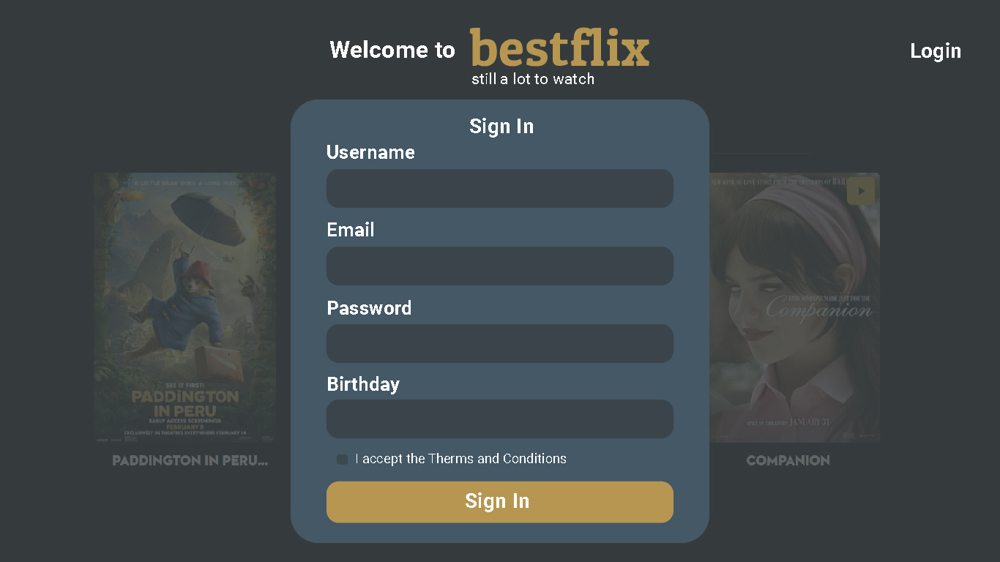
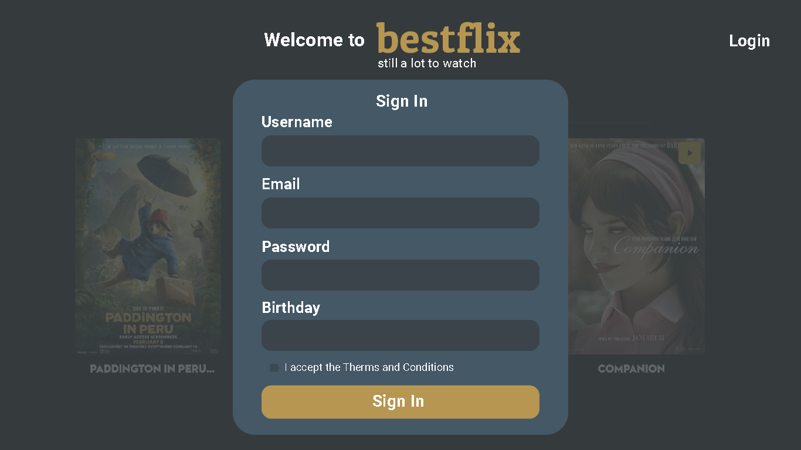
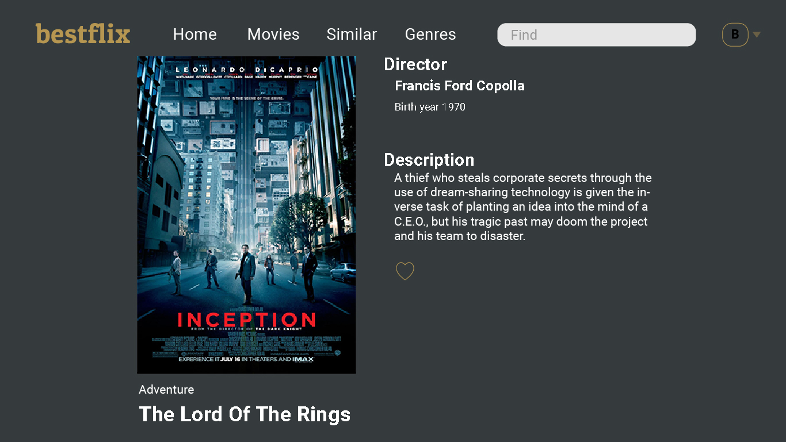
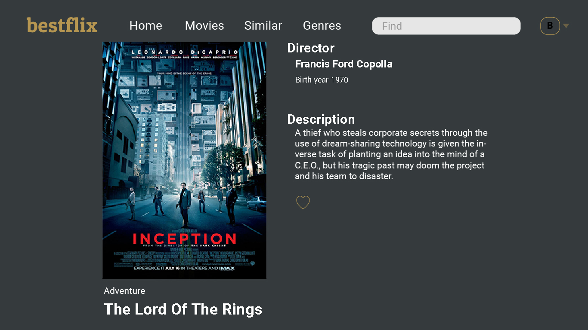

Überblick
Beschreibung
bestflix ist ein Full-Stack-Webprojekt mit Server- und
Client-Elementen, das den Nutzern ermöglicht, einen Filmkatalog zu erkunden.
Es wurde mit dem MERN-Stack entwickelt, um die API mit einer Datenbank
und die Benutzeroberfläche zu erstellen.
Nach der Anmeldung oder Erstellung eines neuen
Kontos können Nutzer durch die Filmauswahl browsen. Sie finden
kurze Beschreibungen zu bestimmten Filmen, deren Genre und Regisseur.
Außerdem können sie eine persönliche Liste mit Lieblingsfilmen erstellen. Zusätzlich können
Nutzer
den Katalog durchsuchen und nach Genre filtern.
Nutzer können ihr Profil aktualisieren, löschen oder ihre Favoritenliste aktualisieren.
Dieses Projekt bot die Möglichkeit, ein umfassendes Verständnis der Backend-API-Entwicklung mit Node.js, Express und MongoDB sowie der Frontend-Entwicklung mit React und Redux zu entwickeln.
Prozess
API & Datenbank erstellen - Backend
Die Entwicklung der Backend-API war grundlegend für die bestflix-Anwendung, da sie als Hauptdatenquelle für den Client diente. Diese Phase umfasste die Erstellung einer NoSQL-Datenbank mit MongoDB, in der alle Film- und Nutzerdaten gespeichert und für Interaktionen verfügbar sind. Die API verwaltet Informationen zu Filmen, Nutzern, Genres und Regisseuren. Das Ziel dieser Phase war es, eine robuste und gut strukturierte RESTful-API zu erstellen, die mit einer MongoDB-Datenbank interagieren kann und CRUD-Operationen (Create, Read, Update, Delete) ermöglicht. Dies umfasste Benutzerauthentifizierung und -autorisierung zur Sicherung von Nutzerdaten und Verwaltung von Zugriffsberechtigungen. Als letzten Schritt für die bestflix-API habe ich ein leistungsstarkes Tool zur Erstellung einer gut organisierten und detaillierten Dokumentation - Swagger - verwendet.

Client-Seite entwickeln - Frontend
Für die Entwicklung einer Single-Page-Webanwendung mit responsivem und modernem Design habe ich mit React und Redux gearbeitet. Die Benutzeroberfläche ermöglicht reibungslose Interaktionen mit der API - Anmeldung oder Registrierung, Durchsuchen des Film- katalogs, Lesen der Filmbeschreibungen, Aktualisieren des Nutzerprofils, Hinzufügen oder Entfernen von Lieblingsfilmen und mehr.
Backend & Frontend - Fähigkeiten & Werkzeuge
- Definition von API-Endpunkten und Routen mit Express-Framework und Middleware-Funktionen.
- Erstellung einer NoSQL-Datenbank mit Mongoose zusammen mit korrekter Autorisierung, JWT- Authentifizierung und Daten- validierung für sichere Operationen.
- Verwendung von React-Komponenten zur Erstellung wiederverwendbarer UI- Elemente und Redux zur Verwaltung von Zuständen, Daten- flüssen und komplexen Funktionen.
- Implementierung des Bootstrap- Responsive-Systems für eine benutzer- freundliche, intuitive und moderne Oberfläche.
Benutzeroberfläche
Anmeldung & Registrierung
 

Startseite & Filmansicht
 

Fazit
Ziele
Eine Single-Page-Webanwendung als Full-Stack-Entwicklungsprojekt von Grund auf aufbauen. Mit produktionsreifen Backend- und Frontend- Elementen, die bei einem Online-Hosting- Anbieter bereitgestellt werden. bestflix als fertiges Produkt live veröffentlicht und einsatzbereit.
Herausforderungen
Die richtigen Werkzeuge auf Basis meiner neu erworbenen JavaScript-Kenntnisse finden und lernen, wie man mit ihnen arbeitet und ihre Best Practices implementiert. Dies umfasst das Einrichten einer Datenbank mit Validierungsregeln, sicherer Autorisierung und Authentifizierung. Verwalten von asynchronen Anfragen und Antworten bei gleichzeitiger Aufrechterhaltung einer reaktionsfähigen Benutzeroberfläche. Implementierung einer angemessenen Fehlerbehandlung und Bereitstellung von Feedback an den Benutzer. Das Testen der Funktionalität und Beheben seltsamer Fehler ist die größte andauernde Herausforderung, der ich je begegnet bin.
Reflection
Die bestflix Full-Stack-Webanwendung hatte ihre Schwierigkeiten und Herausforderungen, die ich verstehen und überwinden musste. Durch den Entwicklungsprozess konnte ich meine technischen Fähigkeiten verbessern und mich mit etablierten Best Practices für eine funktionale und sichere Backend-Architektur sowie dynamisches, responsives Frontend vertraut machen. Ich habe wertvolle praktische Erfahrungen in modernen Webtechnologien gesammelt. Dies motiviert mich weiter, neue Funktionen zu implementieren und die App noch benutzerfreundlicher zu gestalten.
Final Thoughts
Insgesamt war dieses Projekt eine bedeutende Lernerfahrung. Es hat mir die Möglichkeit gegeben, meine Fähigkeiten in einem realen Szenario anzuwenden und die Komplexitäten der Full-Stack-Entwicklung zu verstehen. Ich freue mich darauf, auf diesem Fundament aufzubauen und neue Technologien und Methoden in der Zukunft zu erforschen.
Ich bin offen für Zusammenarbeit Lass uns verbinden